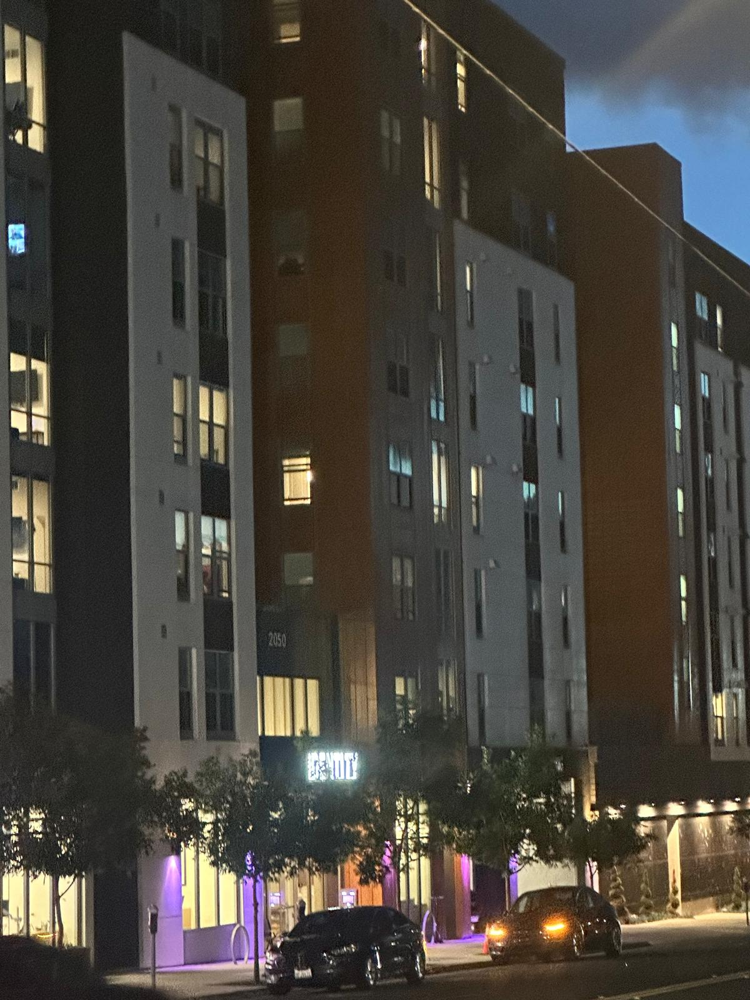
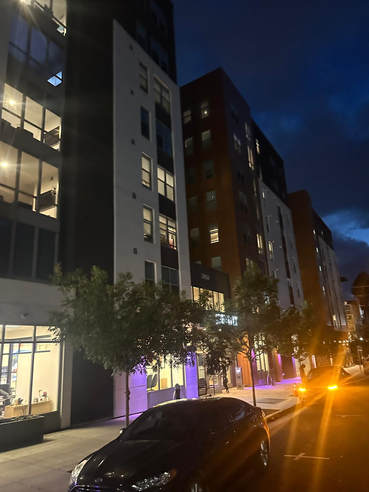
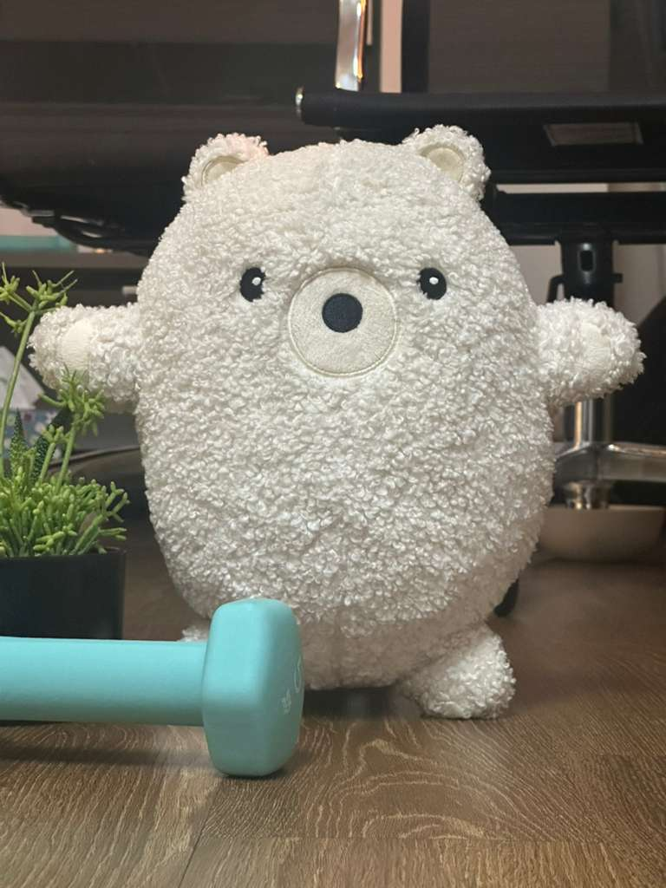

Becoming Friends
with Your Camera
Part 1: Selfie: The Wrong Way vs. The Right Way
Taking a portrait or selfie from close range makes the ears and sides of the face less visible while emphasizing the nose. Stepping backward and zooming in creates more natural proportions between facial features and brings side elements, such as the ears, back into view.
Part 2: Architectural Perspective Compression


When photographed from far away, the different parts of the scene are at more similar relative distances, making the building appear flatter. Moving closer increases those distance differences and creates a stronger sense of depth.
Part 3: The Dolly Zoom

The camera moves backward while zooming in enough to keep the subject approximately the same size. The subject remains stable, but the background changes scale, producing the Dolly Zoom effect.